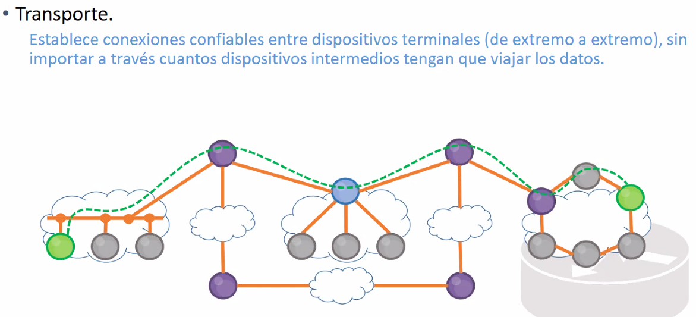

Mantienen la connexion entre los nodos del enlace.
Se reservan los recursos (bloqueados) hasta que llege el mensaje.
Aqui estan los firewalls.
Tambien aqui estan los protocolos TCP y UDP
Entre el punto a y el punto b se mantiene la conexion.